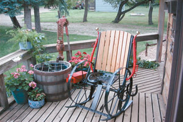

From Country Lore - Dec/Jan 2005
I have a great time finding the used farm-equipment parts for my “Western rockers.”
The seat on this rocker (right) is from a horse-drawn mower, the wheels are from an International Harvester press drill, and the rockers are leaf springs from an antique pickup. The backrest is made from two antique fence posts with an old sickle-bar cross bar that supports the wooden backrest. The hames on each side of the backrest came from an old harness my dad used on the farm. I put the toolbox from an International Harvester grain binder on one side and two horseshoes on the other to hold reading materials.
I have many people who want such chairs, but I can’t find enough parts to build one for everyone. To keep the peace, I just make them for family.
Loron Skretteberg
Carson, North Dakota
|
 Mark Newhall/Farm Show |
|
|